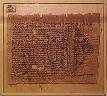

Qetsiyah's Spellbook: A Dark Artifact
Rumors have circulated that Qetsiyah's ancient spellbook has resurfaced, containing powerful and forbidden magic that dates back over two millennia. This legendary tome, said to be imbued with the essence of its creator, is rumored to hold spells capable of altering reality, summoning spirits, and even granting immortality. Many believe that it was lost to time, hidden away to prevent its dark powers from falling into the wrong hands. As whispers of its rediscovery spread, supernatural factions have begun to vie for possession of the spellbook, each with their own agendas. Scholars and witches alike fear that if it is misused, the consequences could be catastrophic, unleashing chaos across the supernatural realm. The search for Qetsiyah's spellbook has ignited a race against time, with many willing to betray allies and invoke ancient curses to claim its power.
Exploring the Ruins of Qetsiyah's Temple
A recent archaeological discovery has uncovered what is believed to be the ruins of Qetsiyah's ancient temple, a site long thought to be a myth among scholars and supernatural enthusiasts. Hidden deep within an uncharted forest, the temple's remnants reveal intricate carvings and symbols that tell the story of Qetsiyah's powerful magic and her connection to the elements. Archaeologists and historians are captivated by the temple's design, which features a series of chambers dedicated to various aspects of witchcraft, including rituals for love, protection, and immortality. As excavations continue, researchers have begun to find artifacts believed to have belonged to Qetsiyah herself, including ritualistic tools and fragments of her spellbook. However, the site has also drawn the attention of those with darker intentions, sparking a race against time to preserve the temple and its secrets before they fall into the hands of those who would misuse its power.